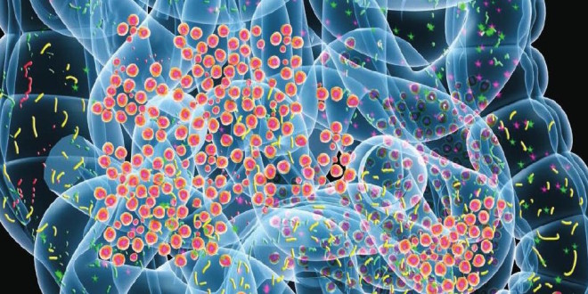

Welcome to the HIVE Lab
The HIVE Lab group is involved in developing the High-performance Integrated Virtual Environment (HIVE) which is a collaborative project between Dr. Vahan Simonyan's group at the Food and Drug Administration (FDA) and Dr. Raja Mazumder's HIVE Lab team at George Washington University (GW). Both groups are coordinating their efforts to integrate various high throughput data analysis tools into the HIVE platform. In addition to the HIVE platform, HIVE Lab is involved in developing standards for bioinformatics communication (BioCompute), and knowledgebases in glycoinformatics (GlyGen), cancer research (OncoMX, BioMuta, BioXpress) and microbiome analysis.
HIVE team projects fall into two major categories: developing infrastructure for biomedical data analysis and using that infrastructure to integrate and mine the data for knowledge.
There are a variety of bioinformatic tools, resources, and databases developed by our team.
The HIVE team has a variety of peer-reviewed publications, book chapters, posters, brochures, and multimedia available for the public.